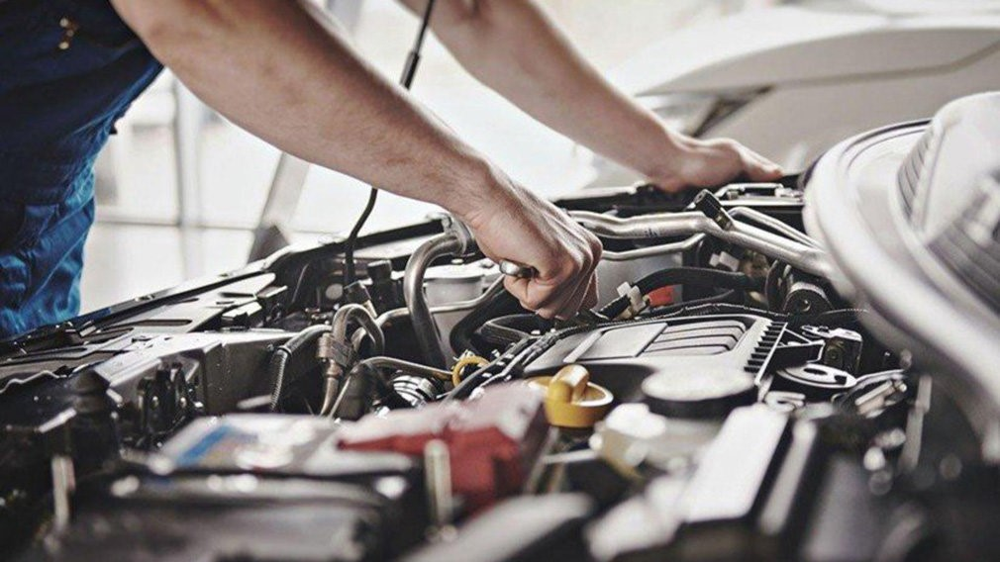
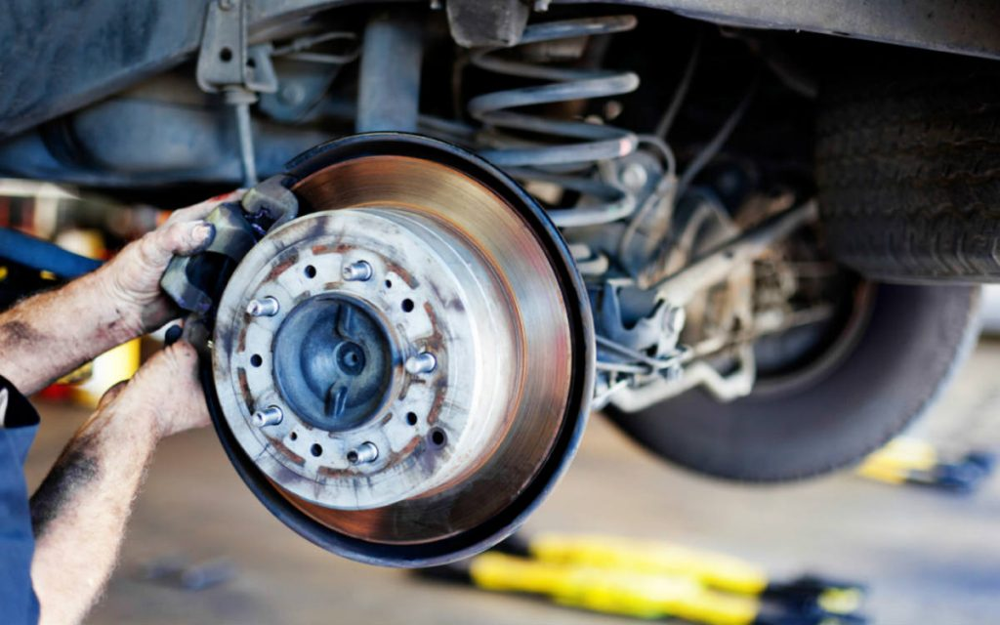

Cuida de tu motor
Cambio de aceite regularmente, lo recomendable es cada 5000km. Mantener limpio el motor, con el tiempo se puede generar una capa de polvo en el radiador y generar una pérdida de refrigeración. Recargar el tanque antes de que llegue al mínimo, el combustible tiene cierta cantidad de sedimentos, los residuos se van acumulando, y pasarán algunos al motor ocasionando un daño interno.
Frenos
Es necesario revisar el líquido de frenos cada cierto tiempo, para mantener su eficiencia. Lo recomendable es hacerlo cada 30.000km. Verificar el estado de las pastillas de freno delantero cada 15.000km, revisar las pastillas de frenos traseros cada 30.000km.
Luces y Carroceria
Revisa periodicamente que todas las luces externas de tu vehículo estén en condiciones. Una manera rapida y fácil de hacerlo es sentarte al volante y, con el auto detenido, accionar de a uno por vez los comandos de las luces bajas, altas, las de posicion, de giro, de freno y las de marcha atrás. Guardar el coche en el garaje, Lavar el coche con frecuencia, Despues de lavar, encerar, Pule y descontamina la pintura del vehiculo cada 2/3 años arregla los daños según se vayan produciendo.